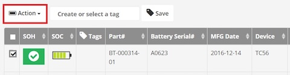
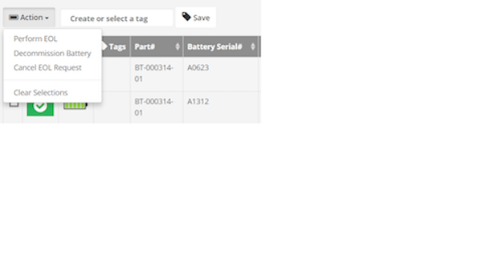

This section provides information on the use of PPC on the server and client.
PPC Server
PowerPrecision Console server is a centralized dashboard displaying an inventory of deployed Zebra device batteries with color-coded battery health indicators based on SOH. It tracks state-of-health (SOH), state-of-charge (SOC), tags, part number, serial number, manufacturing date, device model, device serial number, IP address, last known status, and last update (elapsed time since the last update was received).
(dashboard screenshot)
Navigation and customization view of the centralized dashboard. The PPC Client app sends regular battery updates to the PPC Server, which automatically categorizes the batteries into “good” (green), “nearing end-of-life” (amber) and “end-of-life” (red) SOH categories based on the thresholds defined. A quick snapshot of battery SOH for all deployed batteries is available at the top right. SOH filtering is available to quickly view individual or multiple SOH categories of deployed batteries to identify the batteries that are nearing EOL or need to be decommissioned. The columns on the dashboard can be sorted by tapping the double triangle to the right of the column name. A tabbed menu is displayed at the top of the dashboard providing access to other views and functionality: Active, Decommissioned, Add Battery, Server Settings, Client Settings. A search can be conducted based on battery or device information.
{search screenshot}
Further customize the dashboard by selecting the categories to filter in the view:
(screenshot)
Centralized control to segregate batteries in poor health. In the Active tab, click on any battery for complete battery information including battery analytics history, status, IP address, date of manufacture, serial number and more. Choose one or more batteries in poor health and send customizable “end-of-life” (EOL) messages to the device end-user, instructing them to prepare to swap their battery in poor health with a new one. These EOL messages can be customized to be sent either immediately, scheduled or appear on the device with a snooze option informing the end-user that the battery is out of commission and needs to be swapped out and disposed of. Once the EOL process is complete, the battery can be decommissioned. During battery decommission, a notification is sent to the end-user requesting for the decommissioned battery to be swapped out. The device is inaccessible at that time, preventing any further device use until the decommissioned battery is removed and replaced with a healthy battery.
[screenshot of battery details]
In the Active tab, select a battery in the dashboard by clicking on the checkbox at the left of the SOH indicator.
(need screen)
The Action button appears.

Tap on the Action button.

The sections below describe the actions listed.

Perform EOL
Perform EOL: When selected, sends a request to the end-user notifying of the battery EOL to prepare for battery decommission. If the user is in the middle of a task, the message will appear in the foreground blocking the user from continued operation.
- Message to Display - Creates customized content for end-user notification message.
- Allow user to snooze – Provides an opportunity for end-users to snooze (continue using the device temporarily) instead of immeidately initiating the decommission process.
Note: When the device is in snooze mode, the admin dashboard provides an indication in the Status column. For example, “User Snoozed [2/5]” is displayed in the Status column, indicating the user has snoozed “2” times out of maximum “5” times.
- Scheduled – select the date to schedule the EOL message to be sent. The message is sent at 12 am on the specified date, taking into consideration that server activity is typically minimal at this time.
[If no options are selected and “Send” is tapped, an EOL request is immediately sent to the end-user notifying that the battery needs to be decommissioned. When an EOL request is sent to the user, the dashboard displays “EOL Request Sent” in the Status column. When the user accepts the EOL request, the status changes to “EOL Request Accepted”. ] When the snooze iterations have completed or the user has accepted the battery swap, the battery can be decommissioned. See Decommission Battery section. The device then begins the decommission procedure by displaying the decommission message:

When sending an EOL request, the web server does not refresh automatically. A manual browser refresh is required to display the change in status.
Decommission Battery
- Decommission Battery - When selected, displays a confirmation message to the admin to decommission the selected battery/batteries. When confirmed, a message appears in the dashboard indicating the battery has been decommissioned. A message notification is sent to the device indicating that the battery needs to be decommissioned. See Device Battery Decommissioning. Once the battery decommissioning process is complete, the battery is removed from the Active tab and moved to the Decommissioned tab.
(screen)
Cancel EOL Request
- Cancel EOL Request - When selected, displays a confirmation message to the admin to confirm the action to cancel the EOL request for the selected battery/batteries. A message displays indicating the batteries are activated and the batter status displays as "In service - active" in the dashboard.
Recommission Battery
If a battery is decommissioned prematurely, it can be placed back into commission. In the Decommission tab in the dashboard, select a battery to decommission. Click the Action button. Click Undo Decommission.

Client Settings
In the dashboard, navigate to the Client Settings tab.

- State of Health Thresholds
- Automatic EOL – When enabled, the battery will automatically be decommissioned after the user accepts the EOL request. If disabled, the administrator would need to manually decommission the battery. Enables batteries to automatically be flagged as EOL once the battery reaches the specified EOL threshold.
- Threshold values - Specify the threshold values for each color-coded battery state in the dashboard. The 3 SOH thresholds are set by default:
Green – up to approximately 85% battery life capacity remaining
Amber – up to approximately 80% battery life capacity remaining Red – less than approximately 80% battery life capacity remaining The percentage measured is an approximate measurement of the capacity of remaining battery life. The default thresholds serve as a guideline – these values can be adjusted to individual circumstances, for example depending on battery performance of the workforce in different shifts. Once the battery reaches a SOH threshold, it is automatically is flagged as EOL.
(screen with markups to customize threshold)
Data Collection Triggers - Determines what device information is collected and when to send to the server. Select the desired events to trigger data collection on the device and the amount of time elapsed in between each trigger event. When an event is triggered, it is logged in the device history. The minimal time period that can be selected is 1 hour.
EOL Alerts - When enabled, sends an EOL alert notifying the user to prepare for battery decommissioning.
- Max Snooze Count – specify the maximum number of times to snooze until decommissioning is required
- Show Alert On Next Boot – display the EOL message upon next device boot
- Show Alert On Next Battery Swap – display the EOL message upon next battery swap
- Show Alert At – specify a time to display the EOL message. Time set is for the same day or the next day if the time has already passed.
Generate Reports
In the dashboard, click on the Export Data icon on the top right. Select CSV to download all data in .csv file format.
Tag Batteries
Manually Add Battery
Use the Add Battery tab to manually add a battery. This is useful in situations where network connectivity prevents the battery from registering with the server. Once the battery can be registered, the record will updated with the battery SOC.
Manage Users
Create users to access the server.
Server Settings
In the dashboard, click on the Server Settings tab.

The server address (either by IP address or machine name) and server port are displayed. The store location can be edited to aid in location identification.
PPC Client
PowerPrecision Console client is an app for Zebra mobile computers that collects SOC, SOH, and other information from the device battery, uploads the data to the PPC server for processing, and can display battery condition notifications to the device user.

Battery EOL
When the battery is nearing EOL, the admin can initiate the EOL process. A message is sent to the end user indicating that preparations need to be taken to decommission the battery.

The user has the option to snooze (if configured by the admin) or initiate the battery swap. If “Battery Swap” is tapped, the decommission process is initiated. See Battery Decommissioning section. If the user taps “Snooze”, then the snooze duration can be selected: 1 hour, 4 hours, 8 hours, 24 hours.
After the selected time elapses, the EOL message and snooze duration selection appear again and the process is repeated if snooze is tapped until the maximum snooze limit is reached, at which time the end-user can no longer snooze the device. The maximum limit is set in the Client Settings tab. If the “Allow to snooze” option is not selected, the end-user is forced to swap batteries immediately.
Device Battery Decommissioning
When the battery is ready to be decommissioned, the admin can take action to initiate the process and notify the user by displaying a message on the device. See Device Battery Decommissioning above.
Configuration
Threshold Value in PPC and Battery Manager - Battery Manager is a built-in application with the “Percentage decommission threshold” set to 80% by default. This is the same default value for “End of Life Threshold” on PPC. To avoid multiple warning notifications being sent to the end-user with the same message when the battery reaches the percent threshold, we recommend the admin to set the “Percentage Decommission Threshold” value in Battery Manager to 5% less than the “End of Life Threshold” value set on the PPC server. This can be accomplished using an EMM such as StageNow or Zebra's Battery Manager CSP.